CivicSuite
An open-source, sovereignly-deployable, local-LLM municipal operations suite. Modular. Apache 2.0 / CC BY 4.0. Works on the city's own hardware — no cloud, no telemetry, no per-seat pricing.
The suite is built one module at a time. Module 1 ships, Module 2 is the foundation refactor, and the next two modules exist as buildable specs — not vaporware. The catalog covers 26 modules across 7 tiers; only what's listed below has work in progress.
civiccore.migrations), shared SQLAlchemy Base (civiccore.db), and the LLM abstraction (civiccore.llm — providers, templates, registry, context utilities, structured output). Future / planned extraction (placeholder packages only — empty __init__.py, no implementation): auth, RBAC, audit, ingestion, search, notifications, connectors, exemptions, onboarding, catalog, verification. Phase 2 LLM module shipped 2026-04-25. Pinned by every consuming module — see the compatibility matrix.
/staff, while full database-backed workflow screens are still planned.

Every module inherits the same boring, proven stack from CivicRecords AI. There is no clever framework, no novel database, no homegrown LLM runtime — just well-understood components glued together carefully.
The runtime is FastAPI on Uvicorn for the API layer, PostgreSQL 17 with the pgvector extension for both relational data and embeddings, Redis 7.2 (pinned below 8.0 to stay BSD-licensed) for cache and message queue, Celery with Celery Beat for background workers and scheduled jobs, and Ollama serving Gemma 4 for local LLM inference. The frontend is React behind nginx. Embeddings come from nomic-embed-text, also via Ollama.
Everything runs on the city's own server — single workstation for the smallest cities, a small on-prem box for most, and a fully air-gapped deployment for sensitive modules. The model layer is abstracted; Gemma 4 is the default but the registry pattern allows swapping in any model that fits the city's hardware budget.
CivicCore is the package that holds all of this shared plumbing. Modules import from CivicCore; CivicCore never imports from modules. One-way dependency, enforced by a CI lint rule.
The catalog is the long-form product strategy. The summary:
| Tier | Name | Modules |
|---|---|---|
| 0 | Foundation | 1 |
| 1 | Clerk Core | 4 |
| 2 | Land Use & Development | 4 |
| 3 | Administrative Expansion | 5 |
| 4 | Operations & Resident Services | 3 |
| 5 | Internal Business Functions | 4 |
| 6 | Specialized | 5 |
| Total | 26 |
Cities install what they need, in any order, at any pace. Most will never install all 26. That's intentional.
The suite deliberately declines several markets. It is not a first-wave ERP replacement, not utility billing, not a permitting system of record, not CAD/RMS or a courts system, and not a cloud service. Those are markets where established incumbents do the work well enough that an open-source challenger would burn years of effort with no clear win for cities. The catalog explains the boundary in detail in sections 16–20.
github.com/CivicSuite/civicsuite — umbrella repo (this site, charter, specs, ADRs, governance)github.com/CivicSuite/civiccore — shared platform package, shipping v0.2.0github.com/CivicSuite/civicrecords-ai — Module 1, shipping v1.4.0 (transferred to the CivicSuite org on 2026-04-25)civicclerk now has a v0.1.0 runtime-foundation release under the same org, including the /staff workflow UI foundation. Future modules (civiczone, civiccode, ...) will follow the same separate-repo pattern. Module independence is a deliberate design choice - see the CivicCore extraction spec section 5.2 for why this is not a monorepo.